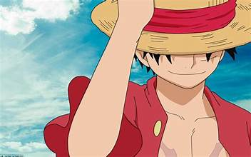

Luffy
Monkey D. Luffy is the captain of the Straw Hat Pirates and dreams of becoming the Pirate King. He is a cheerful and determined leader who inspires loyalty among his crew. Despite his carefree attitude, Luffy possesses incredible strength and an unshakable resolve to protect his friends.